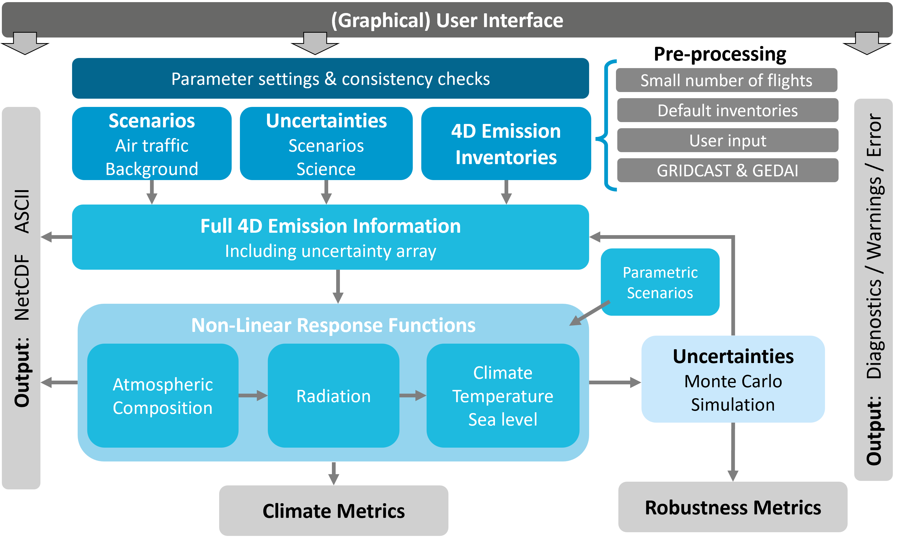

OpenAirClim Documentation
Welcome to the OpenAirClim documentation!
OpenAirClim is an open-source response model for quantifying the climate impact of air traffic emissions. Rather than explicitly simulating physical processes, it uses response functions derived from comprehensive climate-chemistry models. This makes OpenAirClim particularly fast and efficient, with individual runs taking seconds to minutes on a conventional computer.
Motivation
Aviation operations account for around 3.5% of Effective Radiative Forcing [11] and its share is expected to grow. A large part of the aviation’s impact arises from non-CO2 effects, especially contrails [2, 5] and nitrogen oxide emissions [15, 19]. The impact of non-CO2 effects is highly dependent on the location and time of the emission [8, 12], as well as on the characteristics of the emitting aircraft. Emerging aircraft and fuels (e.g. SAF, hydrogen, hybrid-electric) demand new, open and efficient tools to quantify their climate impacts. However, existing models are either closed, too general or computationally intense.
OpenAirClim and its add-ons constitute an open-source framework to rapidly model aviation emissions and their climate response: supporting science, industry and policy. Development is being led by the German Aerospace Center (DLR)’s Institute of Atmospheric Physics and includes various research and industry partners.
Highlights
OpenAirClim builds upon the previous AirClim framework. Compared to AirClim, the new OpenAirClim framework:
Provides standardised, open formats for the simulation configuration file, emission inventories and results
Provides a Graphical User Interface (GUI) for interactive configuration and results exploration
Handles multiple emission inventories over time (4D dependence)
Allows attribution of climate impact to specific aircraft or fleets
Implements tagging for atmospheric chemistry
Extends contrail calculations to novel aviation fuels
Enables the calculation of parametric scenarios at post-processing level, e.g. climate optimised routing
Provides uncertainty and robustness metrics (work in progress)
Provides various outputs, including time series of radiative forcing and temperature change, various climate metrics and sea-level rise
Typical use cases
OpenAirClim is aimed both at research and industry. Typical research questions that can be answered by using OpenAirClim relate to:
fleet-wide scenarios, e.g. the introduction of a new aircraft type; climate impact of operations from a specific airline or airport
aviation industry scenarios, e.g. the introduction of a new fuel type; climate-optimal distribution of SAF
operational procedures, e.g. intermediate stop operations; flying lower and slower
Layout

Overview of the OpenAirClim framework
The OpenAirClim framework is shown in the above figure. The main aspects are:
A (graphical) user interface for controlling simulation settings (top bar)
Main inputs: underlying air traffic scenario, background atmospheric concentrations, uncertainty ranges and aviation emission inventories
Built-in functionality and add-ons to pre-process scenarios and emission inventories (e.g. GRIDCAST and GEDAI)
A processor for handling multiple emission inventories of time (4D dependence)
A framework for the application of non-linear response functions, calculating the impact on atmospheric composition, radiation, temperature and sea level
Parametric scenarios and sensitivities at post-processing level
Outputs: time series of Radiative Forcing and temperature change; climate metrics, robustness metrics and diagnostics